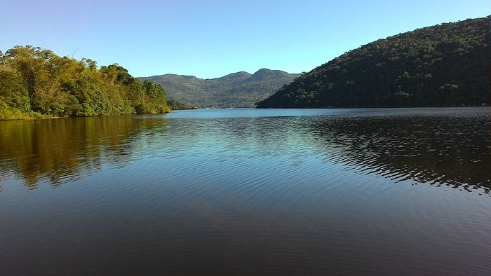
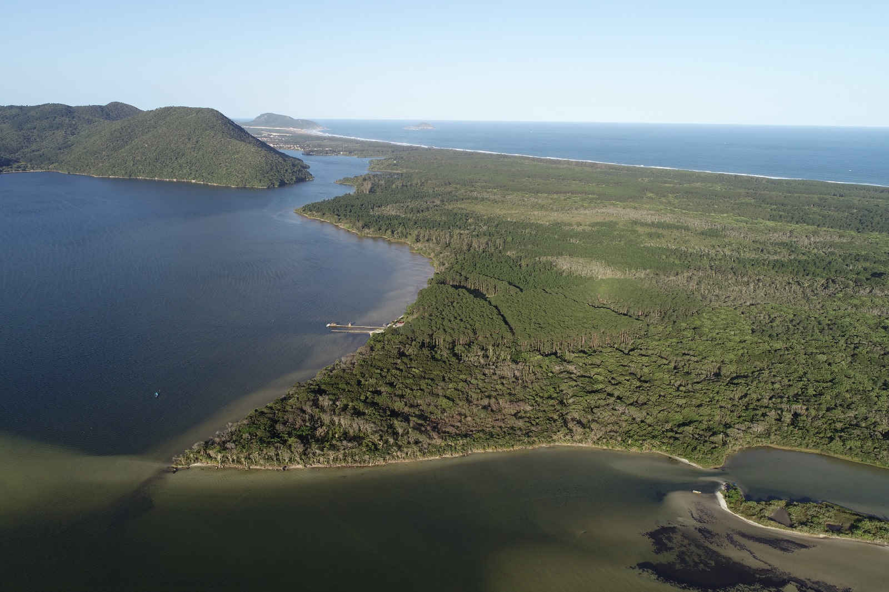

Parque Estadual
Restinga, dunas e a extensa Praia do Moçambique, no norte da Ilha de Santa Catarina.
Criado em 2007, o parque protege restingas, dunas, lagoas e quase toda a extensão da Praia do Moçambique, a maior praia de Florianópolis.
A unidade abriga remanescentes de pinus introduzidos na década de 1960 que estão sendo gradualmente substituídos pela vegetação nativa.
É refúgio de tartarugas-marinhas, aves migratórias e mamíferos como o gato-do-mato e o cachorro-do-mato.

Mensagens enviadas pelos visitantes sobre este parque (armazenadas neste navegador).
Nenhuma comunicação registrada ainda. Seja o primeiro a enviar →